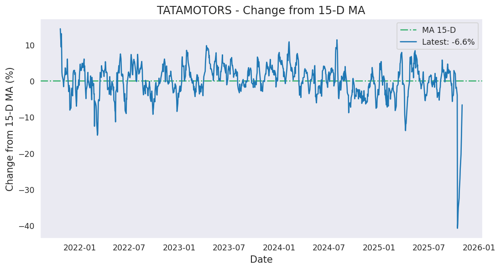

Change from moving averages


Analysis based on 1292 records from January 01, 2020 to March 10, 2025
Last updated on March 10, 2025
| 5 Days | 15 Days | 50 Days | 200 Days | 1000 Days | |
|---|---|---|---|---|---|
| Start Date | March 04, 2025 | February 17, 2025 | December 31, 2024 | May 24, 2024 | March 01, 2021 |
| Net Return | 4.35% | -4.77% | -11.65% | -32.65% | 100.70% |
| Average Daily Return | 0.855% | -0.326% | -0.248% | -0.197% | 0.070% |
| Median Close Price | 640.80 | 648.55 | 710.10 | 905.67 | 495.43 |
| Lowest Close Price | 619.20 | 619.20 | 619.20 | 619.20 | 276.95 |
| Highest Close Price | 648.30 | 689.80 | 794.95 | 1161.85 | 1161.85 |
| Mean Value Traded | 7.87B | 7.96B | 9.57B | 11.56B | 10.14B |
Last close price: 648.15
Average of last 15 days: 655.29
Average of last 50 days: 713.29
Average of last 200 days: 882.93
TATAMOTORS first closed above its last close price on Friday, October 13, 2023 which was 514 days ago.
Since then, it has closed over this price 95.2% of times which is 334 trading days.
Previously, TATAMOTORS closed above its last close price on Friday, March 07, 2025 which was 3 days ago.
Historically, this stock gave a non-positive return for a maximum period of 602 days which was from July 11, 2023 to March 04, 2025.

Last candle: Red (-0.02%)
Overall percentage of Red candles: 48.3%
Current streak of Red candles: 1
Net change so far for the current streak: -0.02%
Probability of streak continuing: 49.1%
Longest streak of Red candles: 9 trading days from August 30, 2024 to September 11, 2024


Current down from ATH: -44.21%
Most down from ATH: -67.41%
ATH hits in last 1000 days: 71
ATH was last hit on Tuesday, July 30, 2024.